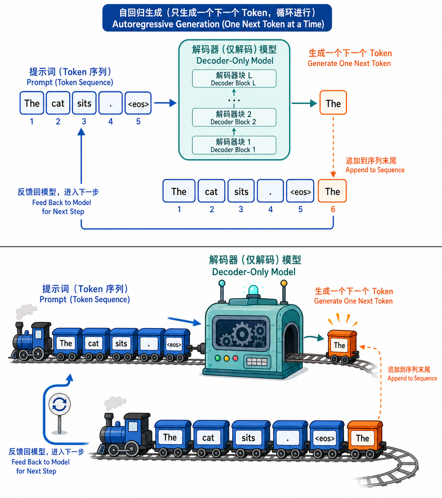

GPT 系列架构演进
前置知识：04 预训练语言模型演进
GPT 路线的核心信念
GPT 系列的核心信念
GPT（Generative Pre-trained Transformer）系列的哲学可以用一句话概括：
更大的 Decoder-only Transformer + 更多的数据 + 更多的计算 = 更强的能力
从 GPT-1 到 GPT-4，架构本身几乎没有本质变化（都是 Transformer Decoder 堆叠），真正变化的是规模和训练方法。
范式转变
GPT-1 (2018): 预训练 → 微调 → 完成任务 （每个任务需要专门微调）
GPT-2 (2019): 预训练 → 直接推理 （Zero-shot，无需微调）
GPT-3 (2020): 预训练 → Prompt 给几个例子 （Few-shot，不更新参数）
GPT-4 (2023): 预训练 + 对齐 → 通用助手 （多模态，推理增强）每一代的核心突破不是"架构创新"，而是规模带来的质变。
一句话澄清：GPT-2/3/4 的代际变化中，架构层变化极小（Pre-LN、稀疏注意力等微调）；真正驱动能力跃升的是训练层（数据规模从 5GB 到数万亿 token、对齐方法从无到 RLHF/DPO）和数据层（数据质量筛选、数据配比优化）。理解这一点，才不会把注意力放错地方——架构是"载体"，训练和数据才是"燃料"。

GPT 系列的演进脉络
1. GPT-1 (2018) — 预训练+微调范式的验证
| 属性 | 值 |
|---|---|
| 参数量 | 1.17 亿 (117M) |
| 层数 | 12 |
| 隐藏维度 | 768 |
| 注意力头 | 12 |
| 上下文长度 | 512 |
| 训练数据 | BooksCorpus (~5GB) |
架构：标准 Transformer Decoder（无编码器、无交叉注意力），与上一模块学的 Decoder-only 完全一致。
核心创新：
- 两阶段训练：先在无标注文本上做 CLM 预训练，再在有标注数据上微调
- 统一架构：不同下游任务只需要改输入格式和加一个线性头，不改模型结构
预训练目标（因果语言模型）：
微调：在预训练权重基础上，加任务特定的线性头，用有标注数据继续训练所有参数。学习率比预训练小很多。
历史意义：GPT-1 首次在 NLP 中系统验证了"大规模预训练 + 小规模微调"的有效性，与 BERT 同期奠定了预训练时代的基础。
2. GPT-2 (2019) — Zero-shot 与"语言模型即多任务学习器"
| 属性 | 值 |
|---|---|
| 参数量 | 15 亿 (1.5B) |
| 层数 | 48 |
| 隐藏维度 | 1600 |
| 注意力头 | 25 |
| 上下文长度 | 1024 |
| 训练数据 | WebText (~40GB) |
架构变化（相对 GPT-1，很小）：
- Layer Norm 移到每个子层的前面（Pre-LN，训练更稳定）
- 最后一层后加了额外的 Layer Norm
- 残差连接的初始化缩放为 $1/\sqrt{N}$（N 为层数）
- 词表从 BPE 40K 扩展到 50257
核心创新：
- 去掉微调：所有任务都用语言模型直接做，不更新参数
- Zero-shot 任务转化：任何 NLP 任务都可以描述为"给定某种输入文本，预测后续文本"
翻译: "Translate English to French: cheese =>" → "fromage"
摘要: "Article: [长文本]\n\nTL;DR:" → "摘要内容"
问答: "Q: What is the capital of France?\nA:" → "Paris"- "太危险不发布"：OpenAI 最初只发布了小版本（124M/355M），后来才发布 1.5B 版本
关键发现：即使没有针对特定任务训练，仅靠预训练+规模扩大，模型就开始展现出任务泛化能力。这暗示了规模是能力涌现的关键。
3. GPT-3 (2020) — In-Context Learning 的突破
| 属性 | 值 |
|---|---|
| 参数量 | 1750 亿 (175B) |
| 层数 | 96 |
| 隐藏维度 | 12288 |
| 注意力头 | 96 |
| 上下文长度 | 2048 |
| 训练数据 | ~570GB (Common Crawl + Books + Wikipedia) |
| 训练成本 | ~$4.6M (3640 PF-days) |
架构变化（相对 GPT-2，极小）：
- 交替使用稠密和局部带状稀疏注意力模式（Sparse Transformer 启发）
- 除此之外，与 GPT-2 几乎完全相同
核心创新 — In-Context Learning (ICL)：
GPT-3 最重要的发现不是架构，而是不更新参数就能学习新任务：
Zero-shot: "Translate English to French: sea otter =>"
One-shot: "Translate English to French: sea otter => loutre de mer\ncheese =>"
Few-shot: "sea otter => loutre de mer\npeppermint => menthe poivrée\ncheese =>"| 模式 | 示例数 | 梯度更新？ | 效果 |
|---|---|---|---|
| Zero-shot | 0 | 否 | 一般 |
| One-shot | 1 | 否 | 较好 |
| Few-shot | 2~100 | 否 | 接近微调 |
| 微调 | 全量 | 是 | 最好但代价高 |
为什么 ICL 有效？（三种假说）
- 隐式梯度下降：注意力机制在前向传播时隐式执行了类似梯度下降的参数更新（Akyürek 2022, von Oswald 2023）
- 任务识别：预训练时见过大量"输入-输出"格式，模型学会识别 prompt 中的任务模式
- 贝叶斯推理：模型在所有预训练任务的后验分布中做推理，Few-shot 示例用于缩小候选任务范围
规模的作用：ICL 能力在小模型中几乎不存在，到 GPT-3 (175B) 级别才显著涌现。这是"涌现能力"的经典案例。
4. GPT-4 (2023) — 多模态与推理的飞跃
| 属性 | 推测值（OpenAI 未公开） |
|---|---|
| 参数量 | 约 1.8T（推测，8×220B MoE） |
| 架构 | Mixture of Experts (MoE)（推测） |
| 上下文长度 | 8K / 32K / 128K（多版本） |
| 训练数据 | 约 13T tokens（推测） |
| 多模态 | 文本 + 图像输入 |
核心突破：
- 多模态：首次接受图像输入（GPT-4V），后来 GPT-4o 进一步支持音频
- 推理能力大幅提升：在 BAR Exam、SAT、GRE 等考试中达到人类前 10% 水平
- MoE 架构（广泛推测）：
- 非所有参数同时激活，而是由路由网络选择子集专家
- 总参数量巨大但每次推理只用一部分，兼顾能力和效率
- 安全对齐：大量 RLHF + Red Teaming，拒绝有害请求
- 长上下文：从 8K 扩展到 128K
GPT-4 未公开技术细节，但社区通过实验和信息推测了大量架构信息。这也直接推动了开源社区的复现努力。
5. 代际对比总览
| 模型 | 年份 | 参数量 | 上下文 | 训练数据 | 核心范式 | 关键突破 |
|---|---|---|---|---|---|---|
| GPT-1 | 2018 | 117M | 512 | 5GB | 预训练+微调 | 验证范式可行 |
| GPT-2 | 2019 | 1.5B | 1024 | 40GB | Zero-shot | 去掉微调 |
| GPT-3 | 2020 | 175B | 2048 | 570GB | Few-shot/ICL | 不更新参数学新任务 |
| GPT-4 | 2023 | ~1.8T* | 128K | ~13T* | 多模态+对齐 | 推理+图像理解 |
*: 推测值
参数量增长：$117M \to 1.5B \to 175B \to \sim 1.8T$，每代增长约 10~100 倍。
本章小结
| 概念 | 一句话总结 |
|---|---|
| GPT-1 | 预训练+微调范式的验证，12 层 117M 参数 |
| GPT-2 | 去掉微调，Zero-shot 直接做任务，1.5B |
| GPT-3 | In-Context Learning 突破，Few-shot 不更新参数学新任务，175B |
| GPT-4 | 多模态+MoE+推理增强，通用AI助手 |
| 核心信念 | 架构不变，规模即正义 |
| ICL | 通过 prompt 示例学习，无需梯度更新 |
| 范式转变 | 微调 → Zero-shot → Few-shot → 通用对话 |
| 开源替代 | LLaMA 系列用更好的训练方法复现 GPT-3 级别能力 |